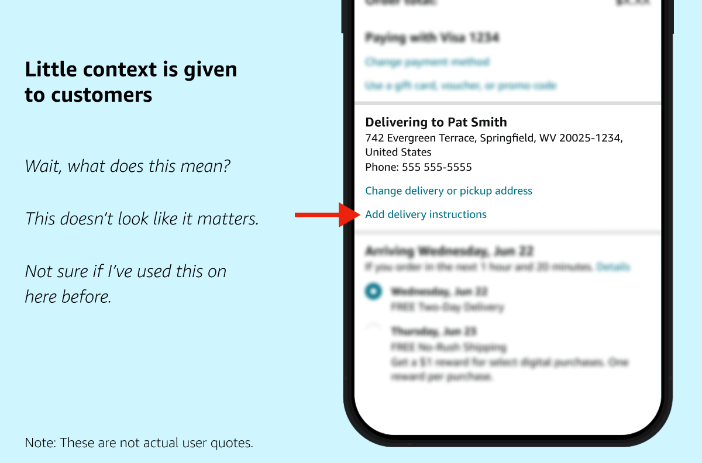

Amazon UX Internship Project
To comply with a non-disclosure agreement, I am unable to disclose specific project details. However, I can share an overview of my process and some of the proposed final designs. The information in this case study is my own and does not necessarily reflect the views of Amazon.
Overview
Over 13 weeks with Amazon's Delivery Experience team, I redesigned delivery instructions. I gathered insights from collaboration with PMs and UXR partners, usability studies, & a ride-along. A competitor analysis (Walmart, Shipt, UberEats) guided my ideas. I proposed 5 mobile concepts to make instructions easier to find and understand to reduce delivery issues.
Details
UX Designer Intern
13 weeks
UI/UX Design
UX Research
User Testing
Figma, UserTesting, Asana, Keynote, Quip
What's the problem?
At Amazon, there is an opportunity to simplify the flow of information between customers and drivers. Particularly, we believe customers can benefit from updating their instructions. Thus, working within a team focused on the post-purchase experience, I was given the task of redesigning delivery instructions.
What are instructions anyway?
Delivery instructions are an opportunity for customers to leave preferences and notes for delivery, such as telling delivery drivers where their package should be delivered (“To my front door”), to how to find and access their address (“This is my security code, I am the first door on the 3rd floor”). Amazon provides many questions on this page that are optional for customers, as these instructions will apply to future orders.
How customers access instructions
In the current experience, customers are typically introduced to delivery instructions through the Checkout page and through the Progress Tracker (PT).
- Checkout: Before placing their order, customers can press a secondary link within the Address card labeled “Add delivery instructions”. This takes them to the main page of instructions.
- Progress Tracker: After the customer makes an order they can press the “Update delivery instructions” button in the main card.
- Main page: Here customers are asked important questions from where specifically their packages should be left (e.g. front door, mailroom), to how to access the property (security code or call box number).
The current CX could use some updating
Having seen the current experience in Checkout and PT, I believe customers can be better encouraged to provide instructions or update delivery information they previously entered.
Little context and visibility is given to the user through these ingress points about what delivery instructions entail and why they might be important.
Moreover, the current main page of instructions consists of expanders, which require a lot of taps from the user and take up more padding than is necessary on the screen.
- The expander UI's unusual expand and collapse behavior—in which opening one question auto-closes another—also creates cognitive load, and can pose an accessibility challenge.
Analyzing research
To better understand the issues around delivery instructions, I dove into current usability studies from my team and engaged in conversations with my partners. With that, I was able to identify different themes, resulting in the creation of three validated customer problems.
Learning from competitors
Keeping in mind delivery instructions exist in other apps, I conducted a competitor benchmarking study to see how other companies are solving this problem. Three apps I analyzed were Shipt (a delivery service owned by Target), Walmart, and UberEats.
- Though Walmart and Shipt have simple UI for leaving delivery instructions, I appreciated their unique components providing clarity to the customer.
- As some customers forget to update instructions, I enjoyed how Shipt gives a reminder that notes they leave behind apply to future orders.
- Likewise, Walmart addresses customer expectations towards drivers by clarifying they will do their best to follow instructions, but they may not always be achieved by drivers. I loved how this component helps drivers, who may not be the target audience but is involved in this area nonetheless.
- As for UberEats, I was inspired by their simple yet well-thought UI.
- Helpful language is interspersed, letting the customer provide delivery preferences with the driver in mind.
- A map experience lets customers drag a pin to where they prefer their dropoff point.
Interviewing a delivery driver
In the 2nd week of my internship, I conducted my own research through a ride-along: a day following a delivery driver and observing their process.
Getting to meet someone directly related to instructions helped open my mind to a different side of the problem and impacted my proposed concepts.
- I learned how many environments a delivery person navigates in one day. As drivers are encouraged to deliver packages quickly, mistakes can happen, which are not the fault of the driver.
- Meanwhile, they aren't obligated to follow instructions if they pose a threat to their safety—for example, a dog preventing them from delivering to the front door.
Wireframing my designs
As soon as I had collected research and validated the customer problems, I ideated on possible concepts. Throughout this process, engaging in Crazy Eights, an ideation practice where you create 8 designs in 8 minutes, helped greatly. Moreover, starting with paper helped the idea process feel more organic.
In the middle of the internship, I proposed the different ideas I developed to my team. I received a lot of interest in my work, as well as feedback. What I quickly learned about sharing my designs was deciding what advice I wanted to act on, and what thoughts were less feasible to act on given the timeline.
Proposed CX
Seeking to simplify the experience between the customer and the delivery driver, I proposed 5 mobile concepts to my team. Three of these concepts involved rethinking where customers can access instructions.
Concept 1: Button redesign in Checkout
In the current experience, customers can access instructions by pressing “Add delivery instructions” in the address card at Checkout.
- However, the button's design makes it unclear what delivery instructions are or whether customers have saved any.
- In this proposed concept, I used helpful language to add context and increase engagement with delivery instructions.
"Add instructions" screen:
In the first use case, where a customer hasn't inputted instructions, the system displays a description below the button to explain what delivery instructions are and how they help drivers.
"Edit instructions" screen:
In the second use case, when instructions are already saved, customers see a preview of their preferences with a “Show more” option under the button. Changing the button's text to “Edit delivery instructions” in this situtation improves usability with minimal effort.
Concept 2: Progress Tracker Nudges
The PT page, where customers can check the status of their package, is a prime area to increase visibility of instructions.
- Currently, a generic“Update delivery instructions” button allows the user to access instructions. However, it doesn't provide much motivation for users to review or update their instructions.
My solution is to inject nudges throughout that encourage customers in different situations to provide meaningful delivery instructions. This includes:
- A bottom sheet appears when users click a button that shows part of their current instructions, asking, "Is this correct?" This sheet allows customers to quickly edit specific details without leaving the current page.
- Updating the original button to ask for a specific detail (e.g., “Add property type”) and emphasizing how this information helps drivers.
- A new feature to “Add one-time delivery instructions”, summoning a bottom sheet that creates temporary instructions for a specific order—crucial for customers who need to apply instructions to a particular order.
Concept 3: Pin on Map experience
While Amazon offers a map experience that allows customers to update their address with a single pin, it is currently only accessible after leaving negative feedback.
Therefore, I propose introducing this feature more prominently to help customers clearly communicate where to leave their packages.
In the new experience, customers can add up to 2 preferred delivery locations (e.g., front door and side door) and provide pins for each location.
The second location is optional and presented as a “backup” to meet diverse customer needs. For instance, customers can add a neighbor's address as an alternative delivery spot.
Closing out with UserTesting
After I finished my final presentation successfully, I conducted usability testing to determine whether customers are likely to update delivery instructions with 2 of my proposed designs in Checkout.
I met with one of my partners, a senior user researcher to create a research plan, organize questions on UserTesting, and publish the test.

The test had 10 participants and involved assessing whether participants had used delivery instructions, describing each screen shown to them, and indicating which option they saw as most useful and why.
As the results came in, I analyzed customers' feedback through video recordings and the help of a new AI feature summarizing key moments.
I then wrote easy-to-read themes of the raw data, recommended next steps for the project, and included this in a comprehensive final project document.
- While I was compiling this document, and during the internship, my manager and mentor were crucial in providing examples of what typical documents looked like in the team.
- As a result, my efforts received a lot of interest from the team, providing valuable insights for how to improve the ever-complex delivery experience.
What I learned from this project
This internship provided me with valuable opportunities to explore my strengths and areas for growth. I discovered my passion for diving deep into customer needs and working backward from problems. While I held back initially from proposing radically new ideas, I learned that all ideas are welcomed.
Managing diverse feedback presented a challenge, but I overcame it by collaborating closely with immediate partners.
As my confidence grew in the final weeks, I had the opportunity to attend a company offsite in Seattle, and to give my final presentation in-person while I was there (nervewracking, but exciting and worth it!). I met my coworkers in person, connected with some awesome designers, and participated in engaging UXD, UXR & soft skills training workshops.
Why I'm Excited About UX
- Collaborative design thinking is deeply rewarding
- Many opportunities to research customer needs
- Developing a business acumen helps create impactful experiences
As a result of this internship, I am even more excited to pursue UX. Going forward, I aim to refine my approach to making trade-offs in design projects and to better engage with business goals. In the meantime, I'm eager to elevate my skills through my studies and actively pursue UX learning opportunities whenever possible!